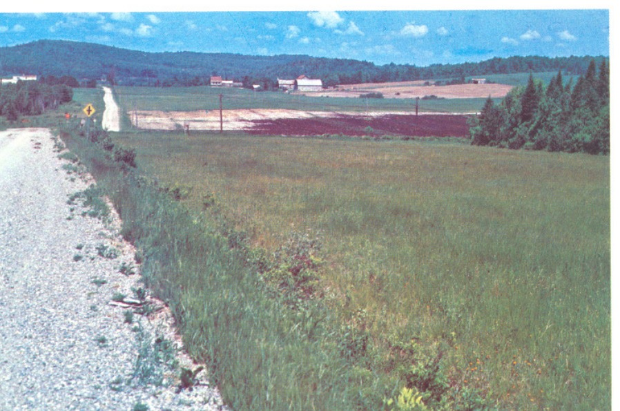
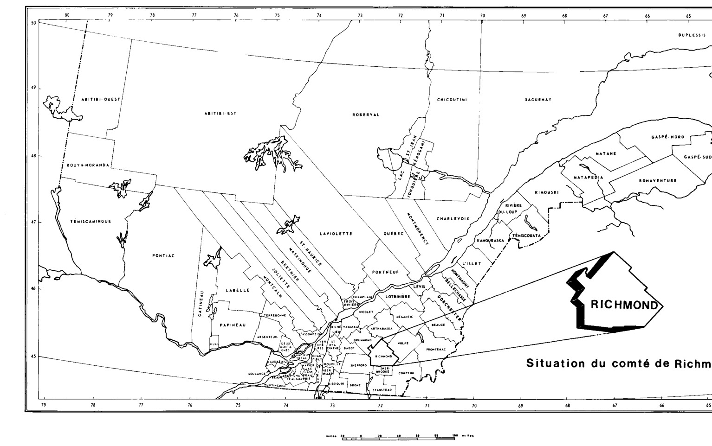
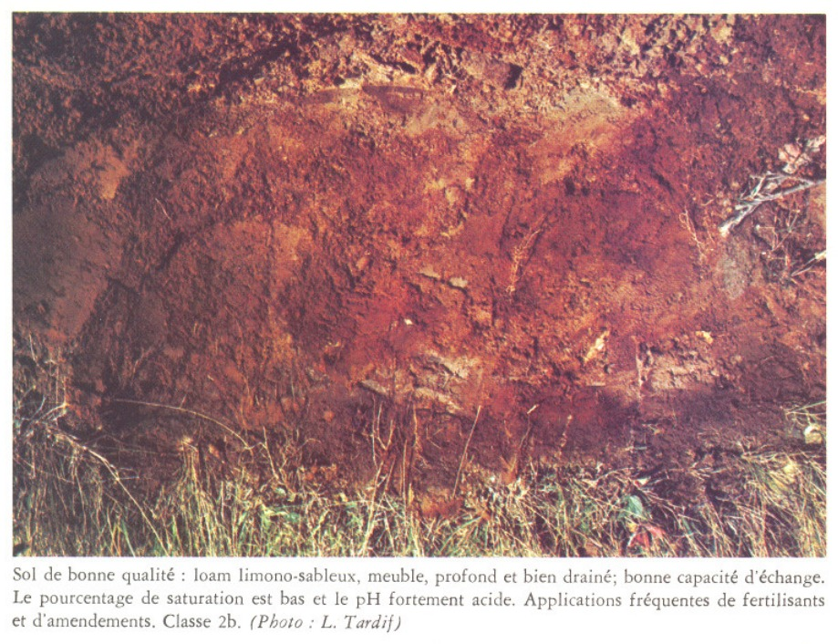
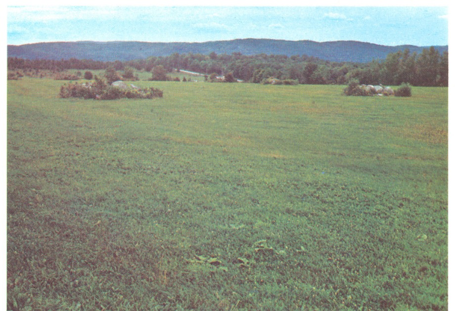
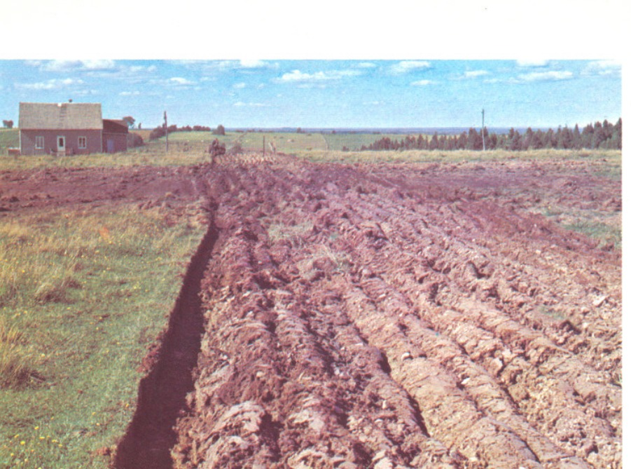
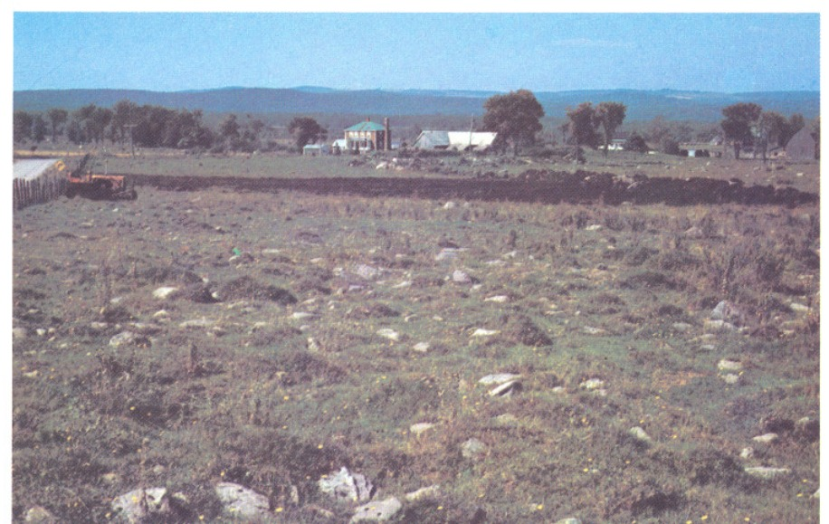
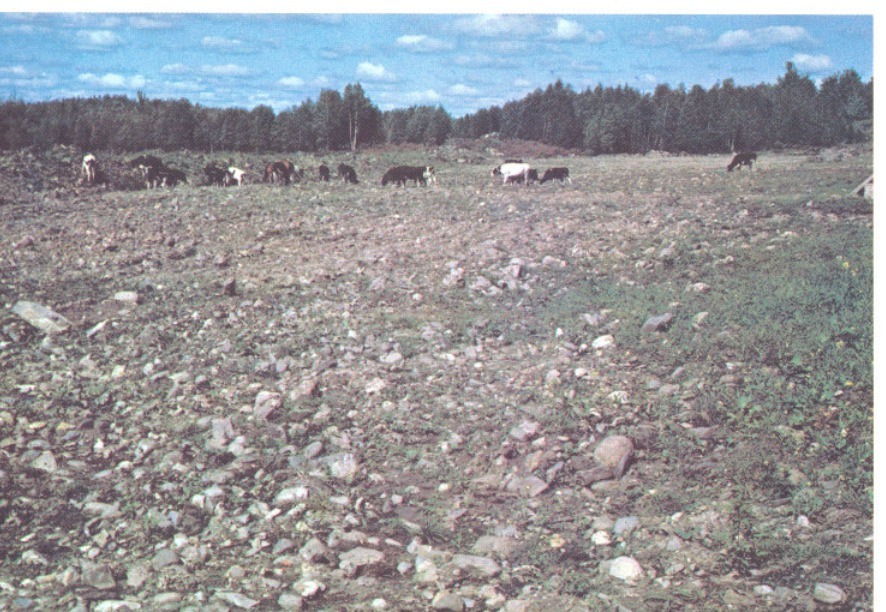
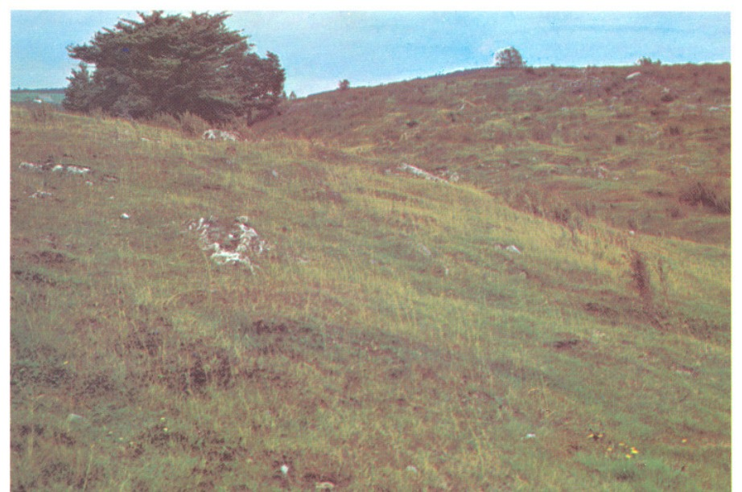

CLASSEMENT
CARTOGRAPHIQUE DES SOLS
SELON LEURS POSSIBILITÉS
D’UTILISATION AGRICOLE
Equipe Pédologique Fédérale
Agriculture Canada
Pavillon Comtois, Ch. 2227
Université Laval
Ste. Foy, Québec
G1K 7P4
Comté
de Richmond
Contribution de la
DIVISION DES SOLS
Marton Tabi, agronome
chef
DIRECTION GENERALE DE LA RECHERCHE ET DE L'ENSEIGNEMENT
Bertrand Forest, agronome
directeur
Dépôt légal — Bibliothèque nationale du Québec
PRÉFACE
Les pédologues du ministère de l'Agriculture du Québec poursuivent depuis plusieurs années l'étude des possibilités d'utilisation agricole des sols selon un système élaboré par des spécialistes de la Division des Sols et adapté au milieu québécois.
Ce système préconise les travaux de bonification et d'amélioration, et les mesures de conservation nécessaires à la mise en valeur et à l'utilisation rationnelle de cette ressource naturelle qu'est le sol agricole.
Le classement cartographique des sols du comté de Richmond est une autre contribution de la Direction générale de la Recherche et de l'Enseignement du ministère de l'Agriculture, à la planification de la mise en valeur des terres et au zonage de l'agriculture québécoise.
Je félicite les auteurs de ce travail qui est indispensable à une bonne gestion du territoire et au développement de l'agriculture au Québec.
Le directeur général
de la Recherche et de l'Enseignement
Bertrand FOREST, agronome
CHAPITRE I
APERÇU GÉNÉRAL DE LA RÉGION .......................................................................................... 9
Situation et accessibilité .......................................................................................................... 9
Topographie ............................................................................................................................ 9
Climat et végétation ................................................................................................................ 9
Hydrographie ........................................................................................................................... 10
Population .............................................................................................................................. 10
Agriculture ............................................................................................................................. 11
CHAPITRE II
CLASSEMENT DES SOLS SELON LEURS POSSIBILITÉS
D'UTILISATION AGRICOLE ............................................................................................................ 21
Objectif ................................................................................................................................. 21
Critères de classement ............................................................................................................ 21
Méthodologie ......................................................................................................................... 22
CHAPITRE III
LA CARTE DES POSSIBILITÉS D'UTILISATION AGRICOLE
DU COMTÉ DE RICHMOND .......................................................................................................... 25
Échelle de la carte ................................................................................................................. 25
Mode d'expression cartographique et association de classes ................................................. 25
Zonation par la couleur ......................................................................................................... 26
Légende des classes de possibilités d'utilisation
des sols telles qu'elles figurent sur la carte ........................................................................ 27
Analyse des résultats planimétriques .................................................................................... 29
CONCLUSION ................................................................................................................................... 30
BIBLIOGRAPHIE ................................................................................................................................ 31
RÉSUMÉ
Les limites du territoire étudié correspondent aux limites du comté de Richmond tel que défini antérieurement aux récentes modifications de la carte électorale et comportent douze municipalités de paroisses ou de cantons qui forment une superficie totale de 341,020 acres au recensement de 1971. D'après la même source de renseignements, la population agricole est de 4,949 habitants. Le nombre et la superficie occupée par les fermes ne cessent de diminuer. Les 880 fermes au dernier recensement forment une superficie de 178,287 acres dont 58,436 sont en culture. L'industrie laitière constitue la principale source de revenus, mais à peine 25 pour cent des fermes ont un revenu annuel supérieur à 10,000 dollars et l'application d'engrais chimiques est en moyenne de 137 livres à l'acre.
Le classement cartographique des sols est effectué d'après les normes du système québécois où la classe de possibilités d'utilisation agricole des sols est la résultante de la valeur intrinsèque ou qualité du sol évaluée à partir de facteurs reflétés par l'état d'évolution du profil du sol et déterminés par analyse et, aussi, des types de travaux préconisés pour sa mise en valeur ou sa conservation originant de contraintes, permanentes ou temporaires, telles que le degré de pente, la topographie, les risques d'érosion, l'absence de profondeur du sol, la pierrosité ou l'état du drainage.
La compilation et l'analyse des résultats planimétriques des différentes classes de possibilités d'utilisation agricole des sols du comté de Richmond permettent de conclure que 44 pour cent du territoire (151,000 acres des 343,500 acres cartographiées) offre des possibilités agricoles. Cependant, dû à la topographie et au relief, 30,000 acres ne conviennent qu'aux pâturages. Abstraction faite des 33,500 acres classées 4cd dont la très grande majorité est actuellement occupée par la forêt, 26,800 acres reparties dans la zone agricole bénéficieraient de travaux de drainage, 10,200 acres, notamment dans Saint-François-Xavier et dans Saint-Claude Nord, de travaux d'amélioration de la structure et 3,800 acres de travaux d'épierrage. Dans l'état actuel, il en résulte une superficie totalisant quelque 45,000 acres (13%) ne nécessitant que des travaux d'entretien, fumure à doses fortes ou modérées et mesures simples contre l'érosion.
Les sols organiques, non exploités, forment une superficie de 6,100 acres dont 3,500 acres pourraient avantageusement être exploitées moyennant un drainage adéquat.

CHAPITRE I
APERÇU GÉNÉRAL DE LA RÉGION
Situation et accessibilité
Le comté de Richmond, situé sur la rive sud du Saint-Laurent, au sud-est du Lac Saint-Pierre, occupe une partie de l'Estrie limitée par les comtés de Shefford, Drummond, Arthabaska, Wolfe, Compton et Sherbrooke au sud. Il se situe entre les latitudes 45.29 — 45.53 et les longitudes 71.39 — 72.16. Le territoire, desservi par plusieurs routes et voies ferrées, représente une superficie totale de 341,020 acres. (1)
Les voies de communication du comté se situent suivant deux axes principaux. L'axe routier (route 143) et ferroviaire de la Saint-François relie Drummondville à Sherbrooke et aux USA en passant par Richmond. Le deuxième axe, de direction N.E. — S.E., rattache le comté d'Arthabaska aux régions de Waterloo et de Granby (routes 116 et 243), en plus de faire le point avec l'autoroute des Cantons de l'Est. La voie ferrée relie au sud-ouest la ligne Montréal-Sherbrooke à Eastman, un peu à l'ouest de Magog. La trame des routes secondaires se relâche dans les étendues peu peuplées et boisées où la topographie est soit montagneuse soit horizontale à déprimée. C'est le domaine des chemins forestiers.
Topographie
Presque tout le comté est inscrit dans le plateau appalachien, à une altitude variant de 450 pieds à 2,150 pieds (Mont Chapman). La topographie d'ensemble, qui se situe à près de 1,000 pieds d'altitude varie de ondulée à vallonnée. Vers le centre, des étendues déprimées interrompues par les entailles des cours d'eau et de basses collines à pentes longues se retrouvent de part et d'autre de la rivière Saint-François. De chaque côté, des alignements topographiques à relief plus accentué bordent le comté au sud-est et au nord-est. Dans ce dernier cas, la succession de collines constituant le rebord du plateau est mis en relief par une vallée qui la flanque en parallèle au sud. Ces collines résiduelles, résultat de l'érosion différentielle, datent, tout comme les monts Stoke, du précambrien. Ailleurs dans le territoire, les formations géologiques se rattachent soit au silurien soit au cambrien.
Climat et végétation
Le territoire jouit d'un climat sub-humide de type continental tempéré, à hiver froid et été chaud. En termes de moyenne annuelle, la température est de un ou deux degrés inférieure à celle de la plaine de Montréal — qui se situe à près de 42°F — comme le montre le tableau suivant.
TABLEAU 1 Aperçu climatique
| Stations | Asbestos | Bromptonville | Granby | Sherbrooke |
|---|---|---|---|---|
| Temp. moy. | 37.2°F | 41.7 | 42.7 | 42.6 |
| Précip. tot. | 42.1 pcs | 40.4 | 43.2 | 38.2 |
Températures et précipitations, 1941-1970, Québec, Min. de l'Environnement. Canada.
La température décroît de l'ouest à l'est et cette caractéristique se retrouve dans le bilan de la saison de végétation qui totalise de 2,750 à 3,000 degrés-jours. La durée moyenne de la saison sans gel varie pour sa part de 120 à 130 jours. Situé dans les régions climatiques 3L et 4L, (2) le comté n'accuse pas de déficit en eau mais un surplus. En somme, le climat de Richmond offre un large éventail de possibilités agricoles et ne présente pas comme tel de limitation majeure, sauf pour certaines cultures spéciales. Généralement, c'est plutôt la topographie, le type de sol, la situation de la population rurale par rapport au marché des villes environnantes qui expliquent telle ou telle orientation agricole.
En ce qui a trait à la végétation, ce sont toutes les données de l'écosystème et les influences anthropiques dont on doit tenir compte pour expliquer les grandes composantes de la forêt locale. Biographiquement, le comté de Richmond est inclus dans le domaine de l'Érablière Laurentienne. Dans les étendues assez bien drainées dominent l'érable à sucre, le hêtre, le tilleul, avec la présence occasionnelle de l'orme, du bouleau jaune, du bouleau blanc et du sapin. Sur les terrains à drainage plutôt déficient se retrouvent l'association érable rouge-bouleau blanc, l'épinette-sapin, l'aulne et le cèdre.
Hydrographie
La plus grande partie du comté de Richmond fait partie du bassin hydrographique de la Saint-François. Cette rivière prend sa source dans le lac du même nom et coule parallèlement à l'alignement topographique des monts Stoke jusqu'à Sherbrooke. Elle s'oriente ensuite vers le nord-ouest pour traverser le comté et se jeter dans le lac Saint-Pierre. À l'est de la Saint-François, les principaux affluents sont les rivières Watopeka, Stoke, Willou et Steele. À l'ouest, la Rivière au Saumon, qui sert de décharge au lac Brompton, constitue le seul affluent d'importance.
Population
Au recensement de 1971, la population totale du comté de Richmond, répartie entre villes, paroisses et localités se chiffre à 41,044 personnes. On y compte 5 villes et 11 paroisses. Les principales villes sont Asbestos (9,749), Windsor (6,023) et Richmond (4,317). Bromptonville et Danville ont moins de 3,000 personnes chacune. Les paroisses sont petites, renferment en général moins de 1,500 personnes, à l'exception de Shipton et Windsor. (1)
TABLEAU II Variations de la population et des fermes
| Année | Pop. tot. | Pop. urb. | Pop. rur. | Nombre de fermes |
sup. occ. | |
|---|---|---|---|---|---|---|
| agric. | non agr. | |||||
| 1966 | 41,485 | 26,448 | 7,159 | 7,878 | 1123 | 206,679 |
| 1971 | 41,044 | 27,125 | 4,949 | 8,970 | 880 | 178,287 |
Recensement du Canada, 1966 et 1971.
TABLEAU-V CLASSEMENT DES SOLS SELON LEURS POSSIBILITÉS D'UTILISATION AGRICOLE (4)
|
VALEUR DU SOL
classe d'utilisation
TYPES DE TRAVAUX
|
ZONE AGRICOLE | ZONE NON AGRICOLE Forêt Loisirs Faune, etc. |
||||
|---|---|---|---|---|---|---|
| Culture | Pâturages, cultures spéciales | |||||
| Très bonne | Bonne | Moyenne | Médiocre | Pauvre (sol très mince) |
||
| Aucun travail particulier d'aménagement | 1 | |||||
| a Amendements ou engrais à doses modérées ou d'entretien | 1a | 2a | 3a | |||
| b Amendements ou engrais à doses fortes ou fréquentes | 2b | 3b | 4b | |||
| c Travaux importants et coûteux d'épierrage | 2c | 3c | 4c | |||
| d Travaux importants et coûteux de drainage | 2d | 3d | 4d | |||
| i Travaux de protection contre les inondations | 2i | 3i | 4i | 5m | 6 | |
| s Amélioration des propriétés physiques (compacité ou perméabilité excessive, etc.) façons aratoires ou amendements appropriés | 2s | 3s | 4s | |||
| e Mesures simples contre l'érosion (pente : 6 - 12%) | 2e | 3e | 4e | |||
| f Mesures plus importantes contre l'érosion: repos du sol, pâturages (pente : 10 - 20%) | 3f | 4f | 5f | |||
| g Aménagement en pâturages ou reboisement (pente : 20% +) | 4g | 5g | ||||
| h Reboisement. Exploitation forestière réglementée | 5h | |||||




Un sol à texture de loam sablo-argileux, bien qu'à sous-sol compact, riche en matière organique en surface et réaction neutre en profondeur est un sol de bonne valeur intrinsèque. La topographie avantageuse incite à le mettre en valeur. L'épierrage et le drainage sont préconisés lorsque requis. Classe 4cd.
Une technique d'épierrage qui occasionne la destruction de la couche organique et par le fait même une diminution de la valeur du sol est condamnable.


Les terrains en pente forte et complexe, constitués de sol mince sur roc sont impropres aux cultures. Il est préconisé de les restreindre aux pâturages ou les retourner à la forêt. Classe 5fm.
Les terrains accidentés formés de sol mince, pierreux, et percés d'éperons rocheux sont impropres à l'agriculture et doivent retourner à la forêt. Classe 5h.
CHAPITRE II
CLASSEMENT DES SOLS SELON LEURS POSSIBILITÉS D'UTILISATION AGRICOLE
Sous le thème classement des sols selon leurs possibilités d'utilisation agricole, il sera particulièrement question de l'objectif, des critères et de la méthode de classement cartographique des sols.
Objectif
L'utilisation rationnelle de toute ressource naturelle fait nécessairement appel à la connaissance de la ressource elle-même et de ses possibilités d'utilisation, ainsi la connaissance des possibilités d'utilisation des sols et de leurs aptitudes aux cultures permet d'évaluer les chances de réussite de l'exploitation agricole compte tenu des données agronomiques, climatiques et économiques, et rend possible la réalisation d'un plan d'aménagement agricole d'une région.
"Qu'elle soit agricole, pastorale ou forestière, la vocation du sol offre à l'homme des possibilités dont le choix ne s'autorise ni du hasard, ni de l'accident. Cette vocation agricole, pastorale ou forestière des sols implique nécessairement différents modes d'aménagement et de mise en valeur si on veut respecter l'aptitude propre et naturelle à chacun de ces milieux-sols.
"Or, on sait que les exploitations agricoles offrant, au départ, le plus de chances de succès possèdent généralement des sols profonds, bien arérés, riches, libres d'obstacles, à relief peu marqué, à pentes faibles, à régime hydrique convenable et autres facteurs naturels favorables. De tels sols, naturellement bien doués, susceptibles d'une productivité élevée et soutenue, répondent facilement à leur vocation agronomique.
"Où se situent les zones propices et les zones défavorables? Quels sont les périmètres destinés à la culture, au pâturage, à la forêt? Quelles sont les terres qui offrent les meilleures possibilités de réussite dans ces domaines variés? Quels sont les sols des cultures susceptibles d'amélioration foncière et quels seraient alors les types de travaux à réaliser pour leur mise en valeur?" (4)
C'est à ces questions que le "classement cartographique des sols avec indices de leur valeur d'utilisation" appuyée sur les caractères fondamentaux du sol veut répondre en vue de l'utilisation rationnelle des sols et de la mise en valeur du territoire.
Critères de classement
Les critères fondamentaux du classement des sols en vue de leurs possibilités d'utilisation agricole sont d'abord la valeur du sol lui-même ou sa qualité intrinsèque à laquelle il faut toujours référer dans l'appréciation de sa valeur d'utilisation et, aussi, la nature et l'importance des travaux nécessaires à sa mise en valeur et à sa conservation.
La qualité des sols s'identifie par l'étude des propriétés telles que : texture, structure, compacité, nature minéralogique du sous-sol, profondeur utile, richesse en humus, réaction, teneur en éléments nutritifs, capacité d'échange et pourcentage de saturation.
Les caractères externes tels que : relief, topographie, sensibilité à l'érosion, pierrosité, drainage défectueux nécessitant divers types d'intervention ajoutés aux propriétés des sols permettent de ranger ces derniers dans une classe de possibilités d'utilisation agricole.
Un mode de classement où il n'est tenu compte que de facteurs limitatifs observables à vue d'œil tels que la pierrosité, le degré de pente, les dommages causés par l'érosion, l'excès d'humidité et l'absence de profondeur du sol mais sans référence à la nature des sols ne peut conduire qu'à une cartographie des terrains et non à la cartographie des sols. Ce n'est que par la prospection systématique et l'étude des caractères du sol que la carte acquiert une valeur de reconnaissance au rang de "carte des sols".
De même, un classement qui ne consiste qu'à ranger les sols selon une certaine séquence allant des sols les plus riches aux sols les plus pauvres, vice versa, sans tenir compte des facteurs externes ne peut conduire à un classement cartographique des sols avec indices de leur valeur d'utilisation. C'est pourquoi le système de classement utilisé tient compte à la fois de la qualité du sol et des caractères externes susceptibles d'entraver le travail du sol et la croissance des plantes.
Méthodologie
L'objectif et les critères de classement étant définis, abordons le classement et la cartographie des sols du territoire déterminé. La prospection systématique du territoire occupe une place essentielle dans la réalisation de travaux de cette nature. On ne doit pas perdre de vue l'importance accordée à la nature des sols dans le système de classement utilisé. Même si l'objectif de la classification pédologique est essentiellement différent de celui du classement des sols selon leurs possibilités d'utilisation agricole, il n'en demeure pas moins que celui-ci est en quelque sorte le prolongement de celui-là. Dans les deux cas, les critères d'ordre biophysique sont les premiers retenus. La carte pédologique est par sa nature un document riche en détails et extrêmement précieux dans la présentation des sols pour les fins d'interprétation en terme de possibilités d'utilisation agricole.
La classification pédologique basée sur la genèse et la morphologie des sols conduit à la connaissance du sol "en soi", ses caractéristiques propres et son degré d'évolution. "C'est en bref la dynamique du sol qui est étudiée à un moment précis de son histoire," comme dit René Raymond dans le traité sur les "Notions élémentaires de pédologie". (5)
Au cours de la réalisation du projet de classement des sols selon leurs possibilités d'utilisation agricole, l'étude pédologique du comté de Richmond, effectuée par D. B. Cann et P. Lajoie a largement été consultée. (3)
La photographie aérienne est également un outil précieux au champ. La photo-interprétation facilite la délimitation et l'identification des unités cartographiques, différenciées sur la base des sols, du relief, de la topographie, de la pierrosité ou du drainage et, dans une certaine mesure, la détermination de la nature des matériaux du sol. Riche
de ces documents, le pédologue cartographe procède à l'étude du territoire et aux levées pédologiques. Les observations et les analyses du terrain permettent le classement et la cartographie conformément aux critères retenus, compte tenu de l'échelle de la photographie aérienne et du plan final, contrainte qu'on ne saurait ignorer. En effet, certaines informations d'intérêt particulier qu'une échelle plus grande permettrait de reproduire doivent nécessairement être sacrifiées au 50,000e.
Dans le but de favoriser la compréhension, le système utilisé est présenté, sous forme schématique, au tableau V intitulé "Classement des sols selon leurs possibilités d'utilisation agricole". La liste des travaux ou des correctifs préconisés peut se modifier, s'allonger ou se raccourcir suivant les besoins, le milieu et l'échelle de la carte utilisée. Selon l'importance et la nature des travaux préconisés, le sol exprimé en terme de classe de possibilités d'utilisation agricole est dévalué dans son état actuel. Par exemple, un sol de bonne valeur intrinsèque, normalement classé 2a, mais réclamant des travaux importants d'épierrage ou de drainage sera classé respectivement 3c ou 3d. Il reste qu'en réalité ces deux types de travaux à la fois peuvent être exigés sur une même aire de sol, la symbolisation devient 3cd. Lorsque l'importance est telle qu'elle rend impossible tout travail du sol, la symbolisation devient alors 4cd sur la carte de possibilité d'utilisation agricole.
CHAPITRE III
LA CARTE DES POSSIBILITÉS D'UTILISATION AGRICOLE DU COMTÉ DE RICHMOND
L'exposé des principes, de l'objectif, des critères et de la méthode de classement des sols vise à faciliter l'intelligence de la “carte des possibilités d'utilisation agricole des sols du comté de Richmond” qu'accompagne le texte explicatif.
“L'aménagement du territoire agricole doit refléter, au stade de la mise en valeur des sols, le souci d'utiliser au maximum leurs possibilités. La méthode de classement utilisée constitue un outil indispensable à la confection de la carte, document de base dans ce domaine”. (4)
Rappelons que la cartographie des sols est fonction des critères de classement retenus, de la nature des sols et de l'importance des travaux de mise en valeur.
Mentionnons d'abord que le plan topographique dressé par le ministère de l'Énergie, des Mines et des Ressources, Ottawa, avec courbes de niveau au 25 pieds, a servi de plan de base à la cartographie des sols classés selon leurs possibilités d'utilisation agricole, préalablement tracée sur photographies aériennes. Les limites des municipalités, tirées par la suite, servent de cadre à la compilation des données planimétriques des différentes classes de possibilités d'utilisation.
Échelle de la carte
L'échelle de la carte est une contrainte qu'il faut respecter. Plus l'échelle de la carte est grande, plus on est en droit de s'attendre à une cartographie détaillée. La précision recherchée dans le cadre d'études régionales diffère de celle au niveau local. Une carte au 50,000e s'avère un outil précieux au plan régional. Il est admis qu'une cartographie plus détaillée doit faire place au 50,000e pour des études d'intérêt particulier au niveau local.
La carte des possibilités d'utilisation agricole réalisée dans le cadre de la présente étude est produite au 50,000e (1.25 pouce égale 1 mille).
Mode d'expression cartographique et association de classes
Une fois la classe d'utilisation déterminée et délimitée sur le terrain il faut l'exprimer de façon graphique sur un plan. Un chiffre accolé à une lettre ou plus symbolise la classe d'utilisation. Les chiffres vont de 1 à 6 selon les possibilités d'utilisation agricole sont grandes ou nulles dépendant de la valeur des sols et de l'importance des travaux d'entretien ou de mise en valeur préconisés. Les lettres réfèrent aux types de travaux. Un sol de très bonne qualité ne réclamant qu'une fertilisation d'entretien à doses modérées est classé 1a. Un sol de bonne qualité réclamant des amendements ou des fertilisants.
sants à doses fréquentes ou fortes est classé 2b tandis qu'un sol identique réclamant des travaux d'épierrage est classé 3c. Lorsqu'aux travaux d'épierrage s'ajoutent des travaux importants de drainage, la symbolisation est alors 4cd. Le tableau synthétique intitulé "Classement des sols selon leurs possibilités d'utilisation agricole" résume la philosophie du système et facilite l'intelligence de la carte.
Les variations des sols et la complexité des paysages rendent souvent impossible la circonscription et le report de chaque classe individuellement sur la carte. Pour rendre une juste image du milieu, il a donc fallu regrouper les classes en association ou complexe de classes. En conséquence, deux ou trois classes figurent en association à l'intérieur d'une même circonscription.
Par une évaluation au champ, la classe d'utilisation la plus significative ou qui forme plus de 50 pour cent de la superficie circonscrite figure en premier suivie des autres par ordre d'importance. Pour éviter de surcharger le document, d'en rendre la lecture inintelligible et de fausser la signification des contours, la limite de trois classes par association est de règle. Une aire cartographiée, 2b, 3d et 5me, comme il s'en trouve notamment dans Brompton, peut comporter des parcelles présentant les caractères du 2a ou du 3e laissées pour compte vu le peu d'intérêt à l'échelle de la carte et leur incidence sur l'orientation d'un programme général et la poursuite des travaux agricoles.
Zonation par la couleur
Pour favoriser la différenciation des classes de possibilités d'utilisation, diverses teintes à caractère symbolique sont choisies sur les cartes en couleur. Deux couleurs de base, le jaune orangé et le vert, identifient respectivement la classe 1 et 6. En passant du 1 à 3, le jaune orangé se dégrade et signifie une diminution de la valeur du sol et des possibilités d'utilisation. De 4 à 6, la couleur verte augmente d'intensité et symbolise un accroissement des difficultés de mise en valeur et une diminution des possibilités agricoles qui se traduisent souvent par le maintien ou la restauration du couvert forestier. Le gris symbolise les sols organiques.
Une teinte particulière est choisie pour chaque catégorie de classes. Les classes 2 sont sont toutes de teinte identique, de même que les classes 4 et ainsi de suite. Lorsque plusieurs classes sont cartographiées en association ou complexe, la teinte choisie réfère toujours à la classe dominante qui figure en premier lieu.
Légende des classes des possibilités d'utilisation agricole des sols telles qu'elles figurent sur la carte
I — Sols propres à la culture (78,656 acres)
Qualité TRÈS BONNE
Classe Types de travaux d'entretien ou de mise en valeur Superficie
en acres
| 1 a | amendements ou engrais à doses modérées ou d'entretien .... | 271 |
| 2 d | drainage ............................................................................... | 1,851 |
| 2 e | mesures simples contre l'érosion: culture et rotations appropriées ........................................................ |
645 |
| 2 de | drainage et mesures simples contre l'érosion ............................. | 271 |
| 2 s | amélioration des propriétés physiques, de la compacité: sous-solage et amendements humides ................................... |
1,109 |
| 3 f | mesures importantes contre l'érosion: culture en courbes de niveau, rotations longues avec pâturages .............................. |
667 |
Qualité BONNE
Classe
| 2 a | amendements ou engrais à doses modérées ou d'entretien ...... | 4,181 |
| 2 b | amendements ou engrais à doses fortes ou fréquentes ............. | 14,716 |
| 3 c | épierrage ou enfouissement des pierres entassées sur le champ | 343 |
| 3 d | drainage ............................................................................... | 18,137 |
| 3 cd | épierrage et drainage ............................................................ | 1,332 |
| 3 e | mesures simples contre l'érosion .......................................... | 15,421 |
| 3 ce | épierrage et mesures simples contre l'érosion ........................ | 310 |
| 3 de | drainage et mesures simples contre l'érosion .......................... | 668 |
| 3 s | amélioration des propriétés physiques, de la compacité .......... | 324 |
| 3 ds | drainage et amélioration des propriétés physiques par le sous-solage et l'apport d'amendements humiques ................. |
8,333 |
Qualité MOYENNE
Classe
| 3 b | amendements humiques ou engrais à doses fortes ou fréquen- tes et cultures appropriées aux sols légers ............................ pierres entassées sur le champ, l'enfouissement est recommandé |
10,077 |
| (c) |
II — Sols peu propres à la culture (44,944 acres)
Qualité MÉDIOCRE
Classe Superficie
en acres
| 4 b | amendements humiques ou calciques, engrais à doses fortes ou fréquentes ou cultures appropriées aux sols légers fortement acides ........................................................................................ |
1,092 |
| 27 |
Qualité MOYENNE
Classe
| 4 c | nécessité d'épierrage et fertilisation | 1,557 |
| 4 d | nécessité de drainage et fertilisation | 4,333 |
| 4 e | mesures simples contre l'érosion, amendements et fertilisation | 3,497 |
| 4 i | protection contre les inondations occasionnelles, amélioration des canaux de drainage de surface et culture appropriée | 545 |
Qualité BONNE
Classe
| 4 cd | nécessité d'épierrage et de drainage. En grande partie sous couvert forestier | 33,146 |
| 4 cds | nécessité d'épierrage, de drainage et amélioration des propriétés physiques | 478 |
| 4 ce | nécessité d'épierrage et mesures simples contre l'érosion | 296 |
III — Sols impropres à la culture (27,871 acres)
Qualité BONNE
Classe
Superficie
en acres
| 4 f | topographie accidentée, aménager en pâturages | 6,092 |
Qualité TRÈS BONNE
Classe
| 4 g | topographie très accidentée, aménager en pâturages | 310 |
Qualité MOYENNE et MÉDIOCRE
Classe
| 5 f | topographie accidentée, maintenir sous couvert végétal, restreindre aux pâturages | 2,602 |
| 5 m | sols minces sur roc acide, amendements et fertilisants | 1,820 |
| 5 me | sols minces, mesures simples contre l'érosion, maintenir sous couvert végétal | 7,425 |
| 5 fm | sols minces et topographie accidentée, mesures importantes contre l'érosion, restreindre aux pâturages | 7,809 |
| 5 g | topographie très accidentée, restreindre aux pâturages ou reboiser | 1,813 |
IV — Terrains non agricoles (185,987 acres)
Classe
Superficie
en acres
| 5 h | pente forte, érodée, excessivement pierreux et en majorité sous couvert forestier. Reboisement et exploitation forestière réglementée | 60,078 |
| 6 | domaine forestier, exploité comme tel | 61,679 |
| 6 i | gorgé d'eau ou fréquemment inondé | 3,144 |
| 6 r | sols minces, pierreux | 18,310 |
| 6 rv | sols minces, pierreux et terrain accidenté | 38,961 |
| 6 v | escarpements ou très accidenté | 3,815 |
V — Sols organiques (6,114 acres)
Aménagement agricole RECOMMANDÉ
| Classe | Superficie en acres |
|
|---|---|---|
| 02 md | bien décomposé, peu profond (3'—) drainage préconisé ...... | 159 |
| 03 md | modérément décomposé, peu profond, drainage préconisé .... | 813 |
| 03 m | modérément décomposé, peu profond, bien drainé ............... | 42 |
| 02 d | bien décomposé, profond (3' + ), drainage préconisé .............. | 2,487 |
| 04 d | modérément décomposé, profond, drainage préconisé ............. | 1,689 |
Aménagement agricole NON RECOMMANDÉ
| Classe | Superficie en acres |
|
|---|---|---|
| 05 | non décomposé (tourbe brute), profond .................................... | 613 |
| 05 m | non décomposé, peu profond ..................................................... | 311 |
Analyse des résultats planimétriques
La compilation et l'analyse des résultats planimétriques des différentes classes de possibilités d'utilisation agricole des sols du comté de Richmond permettent de conclure que 151,000 acres (44%) des 343,500 cartographiés offrent des possibilités agricoles plus ou moins grandes. La superficie des sols propres aux cultures est de l'ordre de 80,000 acres. Cependant, dans l'état actuel des choses, à peine 45,000 acres ne requièrent que des travaux d'entretien: fumure à doses fortes ou modérées et mesures simples contre l'érosion. Réparties à l'intérieur de la zone agricole, 26,800 acres bénéficieraient de travaux de drainage, 10,200 acres, notamment dans Saint-François-Xavier et Saint-Claude Nord, de travaux d'amélioration de la structure au moyen de sous-solage et d'apport de matière organique et 3,800 acres de travaux d'épierrage. De plus, dû au relief et à la topographie accidentée, 30,000 acres incluses dans la zone agricole ne peuvent convenir qu'aux pâturages.
Il importe de souligner que les 33,500 acres classées 4cd et 4cds, en grande majorité actuellement sous couvert forestier, nécessiteraient des travaux importants d'épierrage et de drainage pour leur mise en culture. Un très fort pourcentage des 60,000 acres classées 5h sont également sous couvert forestier, les autres doivent y retourner en vue de l'utilisation rationnelle et de la mise en valeur du territoire.
Enfin, les sols organiques, non exploités, forment une superficie de 6,100 acres dont 3,500 pourraient avantageusement être exploitées moyennant un drainage adéquat.
CONCLUSION
Il faut éviter que les techniques utilisées occasionnent une diminution de la valeur intrinsèque du sol, notamment au cours de l'opération épierrage, par le planage de la couche organique, riche en azote et en microorganismes, tel qu'illustré précédemment.
L'utilisation rationnelle des ressources naturelles et la mise en valeur du territoire de même l'élaboration et la réalisation d'un programme agricole font nécessairement appel à des investissements de capitaux qui, au niveau agricole, doivent se faire sur des sols offrant des possibilités agricoles. Les résultats de la présente étude sont donc une contribution au développement et à l'orientation de l'agriculture du Québec. Le document cartographique est un outil précieux dans ce domaine.
BIBLIOGRAPHIE
- Anonyme. Recensement du Canada. Ottawa, 1971.
- Anonyme. Températures et précipitations, 1941-1970, Québec. Ministère de l'Environnement, Canada.
- Cann, D. B. et P. Lajoie. Étude des sols des comtés de Stanstead, Richmond, Sherbrooke et Compton. Publication 742, Ministère de l'Agriculture, Canada, 1943.
- Mailloux, A., Dubé, A. et L. Tardif. Classement des sols selon leurs possibilités d'utilisation agricole. Publication 37-332, Ministère de l'Agriculture du Québec, 1970.
- Raymond, R. Notions élémentaires de pédologie. Publication 37-294, Ministère de l'Agriculture du Québec, 1972.
Équipe Pédologique Fédérale
Agriculture Canada
Pavillon Comtois, Ch. 2227
Université Laval
Ste. Foy, Québec
G1K 7P4